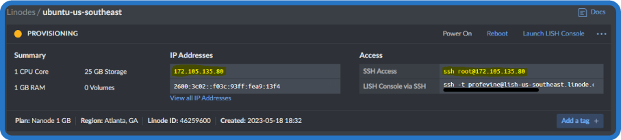
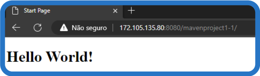

Como sugestão, configure a opção de leitura de caracteres e de pontuação de seu leitor de tela para o grau máximo de leitura, a fim de que os códigos disponibilizados neste material sejam lidos corretamente. No caso do NVDA (NonVisual Desktop Access), para localizar a opção Grau de pontuação/símbolos, acesse Preferências – Configurações – Fala. Altere o padrão Pouco para Tudo. Dessa forma, o leitor passará a ler os segmentos de código em sua totalidade.
Publicar um sistema web envolve disponibilizar a aplicação para acesso via internet, por meio de um servidor que armazena os arquivos e executa as tarefas solicitadas pelos usuários. Trata-se de etapa fundamental, já que não faz sentido criar um sistema web que será acessado apenas no próprio computador.
Esse processo, também chamado de deploy, envolve conceitos de servidores, hospedagem, portas, domínio, entre outros fatores e tecnologias. Em Java, ferramentas extras e o próprio NetBeans podem ajudar no processo. Em um contexto mais sofisticado e profissional, é válida a implantação da técnica de Continuous Delivery (CD), uma abordagem para entrega contínua e confiável de software, que envolve a automação do processo de deploy. A implementação bem-sucedida desses conceitos e ferramentas pode ajudar a garantir a entrega eficiente de software de qualidade em um ritmo acelerado. Esses são os temas do conteúdo a seguir.
O deploy em JAVA para uma aplicação web envolve a preparação e a implantação da aplicação em um servidor de aplicação web, de modo que ela possa ser executada e acessada pelos usuários por meio de um navegador da web. O processo de deploy geralmente segue as seguintes etapas:
Empacotamento
Primeiramente, é necessário empacotar a aplicação web em um formato apropriado, como um arquivo .WAR. Esse arquivo contém todos os arquivos e os recursos necessários para a execução da aplicação, incluindo servlets, páginas HTML, imagens, CSS etc. O empacotamento pode ser realizado manualmente ou com o auxílio de ferramentas de build, como o Apache Maven ou o Gradle.
Servidor de aplicação
Em seguida, é necessário selecionar um servidor de aplicação web que seja compatível com a plataforma JAVA, como o Apache Tomcat, o JBoss/WildFly, o Jetty, o GlassFish, entre outros.
Configuração do servidor de aplicação
Antes de implantar a aplicação, é necessário configurar o servidor de aplicação. Isso pode envolver a definição de portas de acesso, configurações de segurança, configurações de banco de dados, conexões com outros sistemas, entre outras personalizações específicas para a aplicação.
Implantação da aplicação
Com o servidor de aplicação configurado, o próximo passo é implantar a aplicação web. Isso geralmente envolve a transferência do arquivo .WAR para um diretório específico no servidor de aplicação. O servidor de aplicação então descompacta o arquivo .WAR e configura a aplicação para execução.
Teste e verificação
Após a implantação, é importante realizar testes para garantir que a aplicação esteja funcionando corretamente no servidor de aplicação. Isso pode envolver o acesso à aplicação por meio de um navegador, a execução de funcionalidades-chave e a verificação de logs e possíveis erros.
Publicação
Uma vez que a aplicação tenha sido testada e verificada com sucesso, ela pode ser publicada para os usuários finais. Isso pode envolver a configuração de um domínio personalizado, a definição de DNS para direcionar o tráfego para o servidor de aplicação e a configuração de segurança, como certificados SSL.
É importante ressaltar que o processo de deploy pode variar dependendo do servidor de aplicação utilizado e das ferramentas específicas do projeto. Além disso, é fundamental seguir as melhores práticas de segurança, configurar adequadamente as permissões e monitorar o desempenho da aplicação em produção.
No contexto do deploy de uma aplicação JAVA, além dos servidores e hospedagens, existem outros elementos importantes a serem considerados, como portas, DNS, domínios e aquisição de domínios.
Um servidor é um computador configurado para fornecer serviços de rede, como o acesso às páginas da web, envio de e-mails ou armazenamento de arquivos. No caso específico de uma aplicação JAVA, é comum utilizar servidores de aplicação, como o Apache Tomcat ou o JBoss, que são otimizados para executar aplicativos desenvolvidos em JAVA. Quando um servidor está em execução, ele escuta em portas específicas para receber solicitações de conexão. A porta 8080 é frequentemente utilizada como uma porta padrão Java para acesso web. É necessário configurar adequadamente as portas para garantir a conectividade correta.
Além disso, o DNS (Sistema de Nomes de Domínio) desempenha um papel importante na disponibilidade e acessibilidade da aplicação, convertendo nomes de domínio legíveis para humanos em endereços IP numéricos que os servidores podem entender. Ao registrar um domínio, você adquire um nome único que pode ser usado para acessar a sua aplicação. É necessário configurar corretamente as entradas de DNS para direcionar o tráfego do seu domínio para o servidor onde a aplicação está hospedada.
No processo de deploy de uma aplicação JAVA, é comum utilizar serviços de hospedagem, incluindo a opção de servidores VPS (Servidor Virtual Privado), máquinas virtuais que compartilham recursos físicos com outros servidores virtuais, mas operam de forma independente. Com um servidor VPS, você pode instalar e configurar o ambiente necessário para executar a sua aplicação JAVA de forma personalizada.
Ao adquirir um domínio, você precisa registrá-lo por meio de um provedor de serviços de registro de domínio. Isso envolve a escolha de um nome disponível, fornecendo as informações necessárias e efetuando o pagamento do registro. O registro do domínio é válido por um determinado período, e você precisa renová-lo regularmente para manter a posse do domínio.
Em resumo, no deploy de uma aplicação JAVA, além dos servidores e hospedagens, é necessário considerar a configuração correta das portas, a configuração do DNS para direcionar o tráfego do domínio e a aquisição de um domínio por meio de um provedor de registro de domínio. Além disso, a opção de utilizar servidores VPS pode fornecer maior controle e flexibilidade para o ambiente de hospedagem da aplicação.
Tanto Tomcat quanto GlassFish são servidores de aplicação em Java, projetados para hospedar e executar aplicativos web. Eles são executados em um ambiente de servidor, fornecendo um conjunto de serviços necessários para atender às solicitações de usuários, como gerenciamento de sessões, comunicação com bancos de dados e suporte a diferentes tecnologias web.
O Apache Tomcat é um servidor de aplicação open source desenvolvido pela Apache Software Foundation. É uma implementação do servlet e JSP (Java Server Pages) muito popular entre os desenvolvedores Java para hospedar aplicativos web. O Tomcat é leve e fácil de configurar e pode ser integrado a diferentes tecnologias de servidor web, como o Apache HTTP Server.
Já o GlassFish é um servidor de aplicação open source desenvolvido pela Oracle. É uma implementação de referência para as tecnologias Java EE (Enterprise Edition) e é conhecido por sua escalabilidade e suporte a recursos avançados. O GlassFish oferece um conjunto completo de serviços para aplicações Java EE, como EJB (Enterprise JavaBeans), JPA (Java Persistence API) e JMS (Java Message Service).
Em termos de diferenças entre Tomcat e GlassFish, a principal é que o Tomcat é um servidor de aplicação mais simples e leve, enquanto o GlassFish é uma solução mais robusta e completa, que oferece suporte a um conjunto completo de tecnologias Java EE. Outra diferença é que o GlassFish é um servidor de aplicação mais pesado e pode consumir mais recursos do sistema do que o Tomcat.
Imagine que você está preparando um bolo para uma festa. Existem diferentes etapas para preparar e servir o bolo. O arquivo .JAR (Java ARchive) e o arquivo .WAR (Web ARchive) são semelhantes a diferentes formas de servir esse bolo.
O arquivo .JAR é como uma porção individual do bolo, que pode ser facilmente consumida por uma pessoa. Ele é usado principalmente para empacotar e distribuir bibliotecas Java, classes e recursos associados a uma aplicação Java. Um arquivo .JAR é como uma unidade modular, contendo tudo o que é necessário para a execução da aplicação em um ambiente Java. Ele pode ser executado independentemente e ser reutilizado em diferentes contextos.
Por outro lado, o arquivo .WAR é como uma bandeja inteira de bolo, pronta para ser servida a várias pessoas. Ele é usado especificamente para empacotar e implantar aplicativos web Java. Um arquivo .WAR contém todos os componentes necessários para executar a aplicação web em um servidor de aplicação Java, como servlets, páginas JSP, arquivos HTML, imagens, CSS e outros recursos relacionados. Ele também inclui um arquivo de configuração chamado “web.xml”, que descreve a estrutura e as configurações da aplicação web.
Tradicionalmente, usa-se empacotamento WAR para implantação em um servidor web. No entanto, com o advento do Spring Boot que cria arquivos JAR autocontidos (com um próprio minisservidor Tomcat embutido), hoje já é possível publicar arquivos JAR executáveis.
Caso na configuração de seu projeto com Spring Boot a partir do Spring Initializr tenha sido escolhida a opção “Packaging : WAR”, ao compilar o projeto, o arquivo WAR deve ser criado. Caso o projeto tenha sido configurado com “Packaging: Jar”, então é necessário realizar algumas alterações para a criação de arquivo WAR.
<packaging>war</packaging>
<finalName>${artifactId}</finalName>
Você pode, posteriormente, comentar ou remover o tag <packaging> para conseguir executar diretamente o projeto pelo IDE NetBeans.

Crie pacotes WAR para os projetos desenvolvidos nos exemplos dos outros conhecimentos ou desafios desta unidade.
Neste exemplo, será criada uma máquina virtual Linux Ubuntu para ser o servidor, ela estará hospedada no site Linode, que presta o serviço de locação de servidores.
Os sites de hosting para servidores virtuais podem exigir o cadastramento de cartão de crédito e posteriores cobranças. Verifique com cuidado as condições do hosting escolhido e só informe esses dados caso tenha certeza de seu propósito.
Após a criação da máquina Ubuntu, o site mostra os dados do servidor, inclusive mostrando como acessar através do ssh.

Figura 1 – Tela de configuração da máquina virtual instanciada no Linode
Fonte: Senac EAD (2023)
Tela de configuração da máquina virtual instanciada no serviço de aluguel de servidores Linode. Há o IP da máquina e seu acesso SSH.
O acesso ao servidor será por meio do terminal Windows ou Windows powershell, através da conexão ssh.
Passo 1: Preparação do servidor
1.1 - Primeiramente, você precisa ter um servidor Ubuntu instalado e configurado. Certifique-se de ter acesso root ou acesso de superusuário ao servidor (o usuário é root e a senha é escolhida na hora de criar a máquina no site da Linode).
1.2 - Verifique se o servidor está com todas as atualizações instaladas. Use o seguinte comando para atualizar os pacotes do sistema:
sudo apt update
sudo apt upgrade
Passo 2: Instalação do Java Development Kit (JDK)
2.1 - O Java Development Kit é necessário para executar o arquivo .war. Instale o OpenJDK usando o seguinte comando:
sudo apt install openjdk-17-jdk
2.2 - Verifique se a instalação foi concluída executando o seguinte comando:
java -version
A saída do comando deve mostrar algo como “openjdk vertion 17.0.7”. O servidor está pronto para instalar o Tomcat para executar no arquivo .war.
Passo 3: Configuração do servidor de aplicativos
3.1 - Agora você precisa escolher um servidor de aplicativos para executar o arquivo .war. Neste exemplo, será usado o Apache Tomcat. Instale o Tomcat usando o seguinte comando:
sudo apt install tomcat9
3.2 - Após a instalação, o Tomcat será iniciado automaticamente. Verifique se ele está em execução usando o seguinte comando:
sudo systemctl status tomcat9
Você deve ver uma mensagem indicando que o Tomcat está em execução. Acesse então o IP do servidor no navegador e veja que o Tomcat está rodando.
Navegador web com a página inicial de exemplo do Tomcat rodando, mostrando que a configuração está correta e o Tomcat está rodando. Há um menu no topo com o título Apache Tomcat 10.1.8 e o símbolo do Tomcat, que é um gatinho laranja.
Passo 4: Criação e upload do arquivo WAR.
4.1 No NetBeans, use “Clean and Build” para criar um pacote WAR do projeto. Caso necessário, ajuste a configuração de pom.xml no seu projeto Spring.
4.2 Agora no terminal do Windows ou na powershell, é feito o envio do arquivo para a pasta do Tomcat.
Tela do terminal com a execução do comando para o envio do arquivo .war para o servidor. No caso o comando executado, segue scp C:\Users\vine_\Documents\NetBeansProjects\mavenproject1\target\mavenproject1-1.war root@172.105.135.80:/var/lib/tomcat9/webapps.
No caso, foi usado o comando scp e o ssh para enviar o arquivo. A sintaxe segue:
scp /caminho/do/arquivo.war root@ <endereço-IP-da-instância>:/caminho/do/diretório/webapps
No caso deste projeto de exemplo e do servidor criado para teste, o comando ficou:
scp C:\Users\vine_\Documents\NetBeansProjects\mavenproject1\target\mavenproject1-1.war root@172.105.135.80:/var/lib/tomcat9/webapps
Repare que foi usado o comando scp, seguido do caminho do arquivo .war gerado e depois do comando ssh seguido do caminho de onde deve ser colocado o arquivo .war para rodar no servidor.
Feito isso, o servidor Tomcat, descompactará e organizará os arquivos automaticamente. É possível acessar a aplicação de qualquer lugar do mundo por meio do IP do servidor seguido de dois pontos e da porta 8080 e o nome do arquivo .war enviado. No caso deste exemplo, o caminho para acesso ficou:
http://172.105.135.80:8080/mavenproject1-1/
Acessando este servidor por meio do navegador web, é possível ver a aplicação funcionando:

Figura 4 – Servidor rodando com o aplicativo .war disponível para acesso de qualquer parte do mundo
Fonte: Senac EAD (2023)
Tela de um navegador web acessando o IP do servidor criado na barra de URL http://172.105.135.80:8080/mavenproject1-1/. Na página do navegador, há a mensagem “Hello World!”.
Enquanto esse servidor estiver ligado e com o Tomcat rodando, a aplicação estará on-line para qualquer pessoa que queira acessá-la no planeta.
Não é interessante informar um IP para quem quiser acessar seu sistema web, não é mesmo? Para resolver esse problema, é possível comprar um domínio e direcionar esse domínio, por exemplo, “meuappjava.com” para o servidor criado. Para fazer isso, será usado o IP do servidor criado neste exemplo:
Passo 1: Escolha um provedor de registro de domínio. Pesquise e escolha um provedor confiável de registro de domínio. Veja alguns provedores populares brasileiros de registro de domínio:
Esses são apenas alguns exemplos de provedores de registro de domínio no Brasil. É importante fazer uma pesquisa e comparar recursos, preços e suporte oferecidos por cada provedor antes de tomar uma decisão.
Passo 2: Verifique a disponibilidade do domínio. Acesse o site do provedor escolhido e utilize a ferramenta de busca de domínios para verificar se o domínio desejado está disponível. Se estiver disponível, prossiga para o próximo passo.
Passo 3: Registre o domínio. Siga as instruções fornecidas pelo provedor para registrar o domínio escolhido. Preencha as informações necessárias, incluindo seus dados pessoais e informações de pagamento. Certifique-se de fornecer informações precisas durante o registro.
Passo 4: Acesse as configurações de DNS. Após o registro do domínio, acesse as configurações de DNS no painel de controle do seu provedor de domínio. Procure por opções relacionadas a gerenciamento de DNS, Zona DNS ou Configurações de DNS.
Passo 5: Crie um registro de tipo A. Dentro das configurações de DNS, encontre a opção para adicionar um novo registro de DNS. Selecione o tipo de registro “A” (endereço IP) e insira o nome do host como o domínio que você registrou. No campo do endereço IP, insira “172.105.135.80”.
Passo 6: Salve as alterações. Após adicionar o registro de tipo A, salve as alterações de DNS. As alterações podem levar algum tempo para se propagar e se tornar ativas em toda a internet. Esse período é conhecido como propagação de DNS e geralmente leva algumas horas, embora possa levar até 24-48 horas em alguns casos.
Passo 7: Verifique o redirecionamento. Após a propagação do DNS, abra um navegador e digite o domínio que você registrou (por exemplo: www.meuappjava.com). O domínio deve redirecionar automaticamente para o endereço http://172.105.135.80:8080/mavenproject1 do seu servidor web.
Pronto, agora seu app pode ser acessado pelo domínio “meuappjava.com/mavenproject1-1/”, em vez do IP, como usado antes.
Pesquise alternativas ao Linode e estude semelhanças e diferenças com o processo descrito anteriormente.
Alguns serviços permitem a publicação dos pacotes autocontidos JAR, que incluem o próprio servidor web embutido. Um desses serviços é o Heroku, uma plataforma de nuvem que permite deploy de aplicação em máquinas virtuais ajustadas ao tamanho e à necessidade da aplicação. Cada serviço terá suas configurações específicas para a publicação, mas geralmente envolverá não muito mais que o upload do arquivo JAR gerado pelo projeto.
Alguns sites oferecem serviços de hospedagem em que o usuário deve apenas configurar e realizar upload do sistema, sem a criação de uma máquina virtual. Boa parte desses serviços é pago, mas há opções gratuitas, que podem variar em recursos e dificuldade de configuração.
Veja alguns exemplos de hospedagem gratuita para projetos Java Web.
Oferece hospedagem gratuita em seu serviço de nuvem para aplicativos Java, com suporte ao Tomcat e ao Jetty e integração com diferentes bancos de dados.
Em seu serviço de nuvem, suporta Tomcat, Wildfly e outros servidores de aplicativos Java Web.
Veja exemplos de hospedagens pagas.
Oferece diferentes opções de hospedagem para aplicativos Java, incluindo o Elastic Beanstalk, que permite implantar aplicativos Java em um ambiente gerenciado.
Oferece o App Engine Standard Environment e o App Engine Flexible Environment para hospedar aplicativos Java. Além disso, oferece suporte ao Tomcat e ao Jetty.
Oferece hospedagem para aplicativos Java em seu serviço de nuvem, incluindo opções gerenciadas, como o Azure App Service.
Continuous Delivery (CD) é uma prática de desenvolvimento de software que busca garantir a entrega contínua de funcionalidades para os usuários finais de forma eficiente e confiável. Isso é feito por meio da automação do processo de implantação e testes, permitindo que novas funcionalidades sejam entregues rapidamente ao cliente e com alta qualidade. Trata-se de uma técnica especialmente útil para projetos web que não necessitam de instalação e podem ter versões disponibilizadas automaticamente aos usuários tão logo as funcionalidades e os ajustes estejam prontos. Para implementar o Continuous Delivery em um projeto Java usando o NetBeans como IDE, você pode seguir os seguintes passos:
Utilize um sistema de controle de versão, como o GIT/GitHub, preferivelmente com auxílio de serviços como o GitHub Actions.
Configure um servidor de integração contínua usando ferramentas como o Jenkins para automatizar a compilação e os testes do código a cada alteração incluída.
Automatize a construção do software com ferramentas como o Maven, que pode ser usado para automatizar o processo de construção do software, definindo dependências, compilação, testes e empacotamento do código em um arquivo JAR ou WAR.
Configure o ambiente de deploy, que deve estar devidamente testado para que o deploy ocorra sem problemas. Ferramentas como Docker podem ser usadas.
Crie testes automatizados para garantir que o software está funcionando corretamente em todos os aspectos, incluindo funcionalidade, desempenho e segurança.
Configure o Continuous Delivery a partir das ferramentas aplicadas. Geralmente, a configuração passa por scripts próprios.
Monitore o processo de Continuous Delivery para identificar possíveis problemas e melhorias na automação.
É importante lembrar-se de que o processo de implementação pode variar dependendo das necessidades específicas do projeto e da equipe de desenvolvimento. É possível fazer o Continuous Delivery usando serviços de cloud computing, como Google Cloud Platform, AWS e Azure, que oferecem várias ferramentas que podem facilitar a implementação do CD em seus projetos.
Em resumo, a publicação de sistemas web em Java envolve uma série de conceitos e ferramentas que permitem disponibilizar a aplicação para acesso via internet. Além disso, a implementação do Continuous Delivery (CD) pode ajudar a automatizar o processo de deploy, tornando a entrega de software mais rápida e confiável. A adoção dessas práticas pode melhorar significativamente a eficiência do desenvolvimento de software, garantindo que as aplicações sejam entregues rapidamente e com alta qualidade.